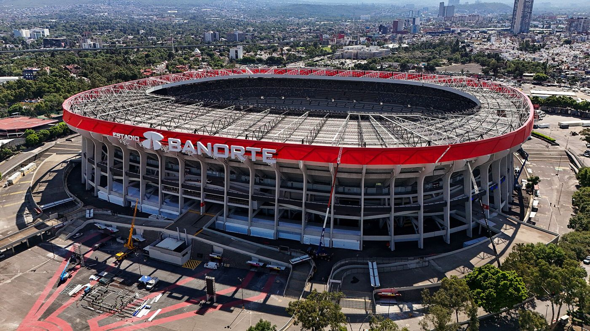

Anteprima · NFL · Week 11
Cousins riporta su i Vikings: a Città del Messico la sfida tra le migliori della NFC
Minnesota Vikings @ San Francisco 49ers · 23/11/2026, ore 02:20 italiane · Estadio Banorte
Nella notte tra domenica e lunedì 23 novembre, alle 2:20 italiane, l'Estadio Banorte di Città del Messico ospita l'ultima partita internazionale della stagione e una delle più attese dell'anno. I 49ers, primi nella NFC con un bilancio di 8-1, affrontano i Vikings, 7-2: formalmente giocano in casa, ma il campo è neutro e a circa 2.240 metri di quota.
La storia della settimana è il ritorno di Kirk Cousins. I Vikings, che avevano aperto la stagione con quattro vittorie e hanno già alternato tre quarterback, lo hanno ripreso con uno scambio dai Las Vegas Raiders, e alla prima partita lui ha guidato il 30-10 a Green Bay con due passaggi da touchdown. Kyler Murray, fermo per un problema al bicipite femorale, in settimana non si è allenato, come Jordan Addison, operato al pollice. Il punto di forza resta la difesa, la migliore della lega, con Andrew Van Ginkel già a 8,5 sack.
San Francisco ha i numeri della favorita. Brock Purdy viaggia sugli stessi livelli dell'anno scorso, con venti touchdown e appena cinque intercetti, e guida uno degli attacchi più prolifici della lega: Christian McCaffrey corre e riceve, George Kittle è il ricevitore più produttivo. In stagione sono arrivati anche DeForest Buckner e Keenan Allen dagli Indianapolis Colts. Il punto debole è una difesa nella media, che nell'ultima partita ha concesso 40 punti nel 46-40 sui Dallas Cowboys.
Gli ultimi due precedenti li hanno vinti i Vikings, entrambi di misura. Il mercato americano vede i 49ers favoriti di poco: è una partita che può pesare sulla corsa al primo posto della NFC, e molto dipenderà da come l'attacco di Purdy reggerà l'urto della difesa di Minnesota.
Leggi su PureStats con meteo e numeri